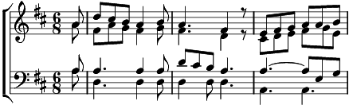

1. Chantons les sentiers des plaines
Escaladant les vieux murs
Cueillons les grappes malignes
Où rayonne un soleil si pur.
Refrain : Sentiers valaisans de là-bas de là-haut
Sentiers conduisant vers un ciel toujours plus beau
Hol yo o hol di o...
2. Chantons les sentiers des vignes
Se déroulant dans les blés
O bel été tu ramènes
Les mois des fleurs et des prés.
Refrain
3. Chantons les sentiers des cîmes
S'élançant vers l'infini
Veillant sur les grands abîmes
Ils vont jusqu'au paradis.
Refrain